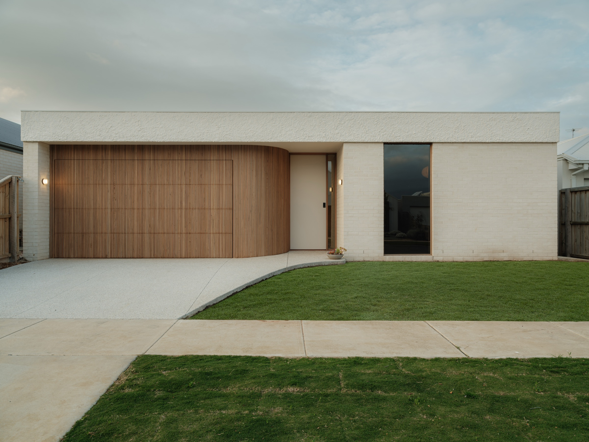
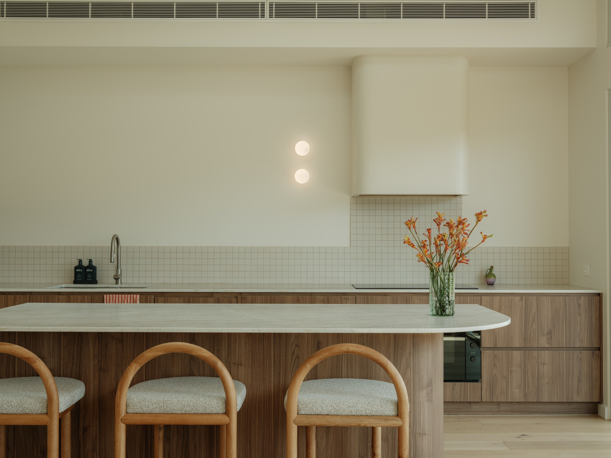
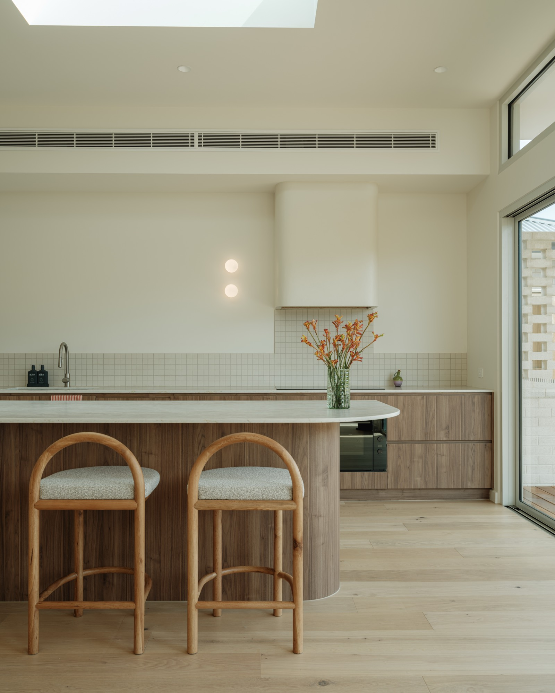
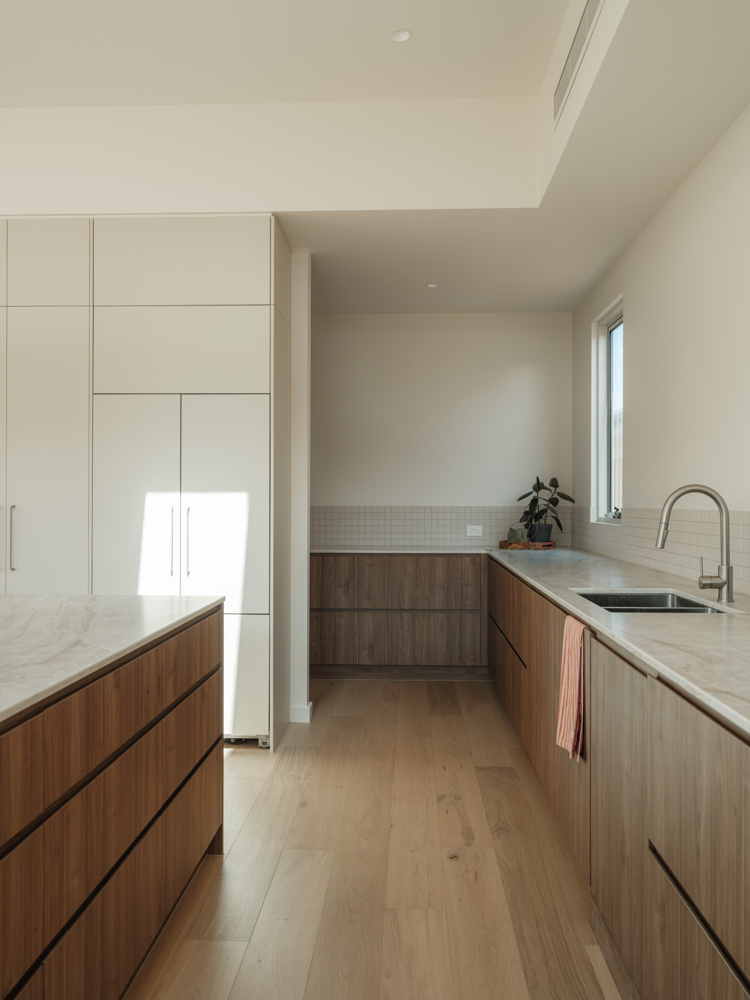
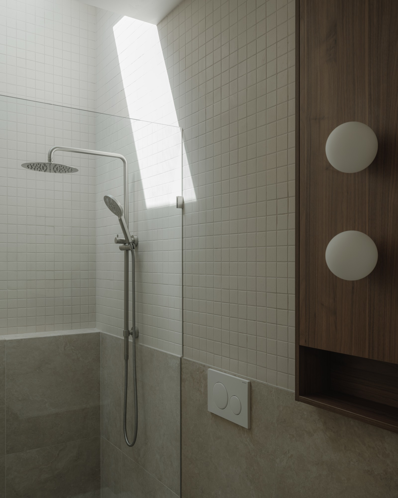
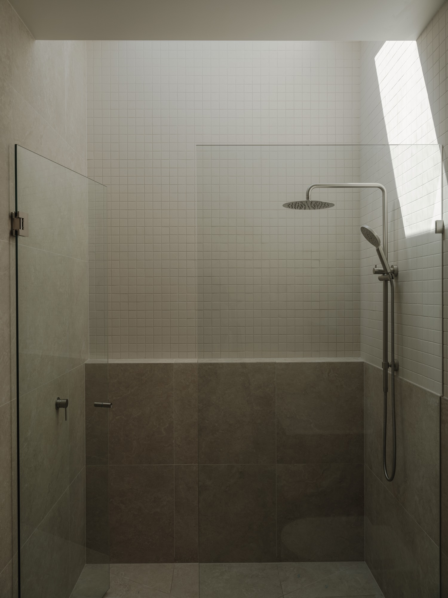

Shorebreak
Way
A single-storey coastal residence defined by a curved timber threshold, a white brick volume, and the steady horizon line of the roof. Our first completed work; a quiet study in restraint.

A coastal threshold,
precisely held.
Shorebreak Way is built around the heart of any home — a single, light-filled kitchen, anchored by a generous walnut and stone bench and softened by a quiet wall of mosaic tile. It's a space designed to be lived in: cooked in, gathered in, lingered in.
From there, the home unfolds gently. Sliding doors open the living spaces to the outside, while a tucked-away scullery and two carefully crafted stone-and-tile bathrooms add moments of calm and considered detail. Light moves through the home in soft, measured ways — drawn down through slim skylights and laid quietly across the joinery throughout the day.




